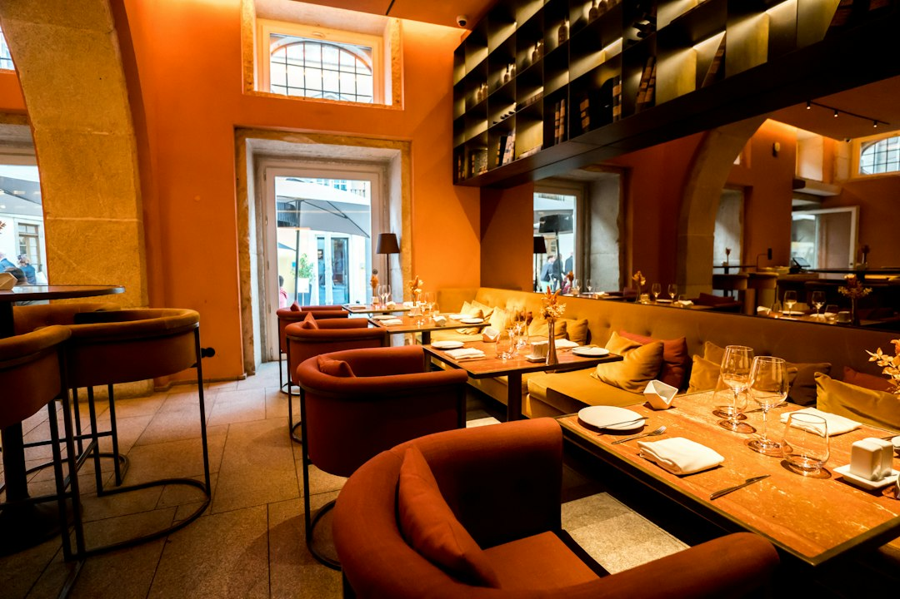

Tecnologia in Cucina: Il Divario Tra Chi Automazione e Chi Resta Al Manuale nel Settore Ho.Re.Ca.

Hamburger Day e Tecnologia in Cucina: Il Divario Competitivo per Ristoratori, Chef e Titolari Ho.Re.Ca.
- La tecnologia in cucina e sala non è più un’opzione, ma una leva strategica fondamentale per la competitività.
- Il tradizionale uso di menu PDF e personale sovraccaricato crea inefficienze e riduce l’esperienza cliente.
- Smart Experience / Taste Engine di RM Studio propone un e-menu interattivo con AI per un servizio snello ed esclusivo, aumentando vendite e soddisfazione.
Analisi approfondita della notizia e delle implicazioni operative
La recente celebrazione dell’Hamburger Day ha acceso i riflettori sull’innovazione tecnologica applicata al mondo del food, dalla ristorazione gourmet ai grandi eventi negli stadi, passando per le catene della ristorazione. Questa evoluzione non riguarda solo la preparazione degli ingredienti o la qualità dei prodotti, ma si estende alle modalità di interazione con il cliente, alla gestione del menu e all’efficienza operativa in cucina e sala. Il fattore chiave emerge chiaramente : utilizzare strumenti digitali integrati e intelligenti crea un vantaggio competitivo decisivo.
Il comparto Ho.Re.Ca. italiano, noto per la sua eccellenza, si trova oggi di fronte a una scelta cruciale: continuare con processi manuali e frammentati oppure adottare soluzioni digitali che automatizzino e migliorino l’esperienza gastronomica e gestionale. Il digitale non è più un lusso, ma una necessità operativa per chi desidera non solo sopravvivere ma crescere nel mercato complesso odierno.
Le conseguenze e i costi di non agire
Lavorare con menu PDF sgranati e statici, non facilmente aggiornabili né interattivi, è una pratica ormai superata che impatta negativamente sul business. I camerieri sono sovraccaricati da richieste di chiarimenti su piatti, ingredienti, allergeni e abbinamenti. Questa situazione genera tempi di attesa più lunghi, comunicazioni errate e insoddisfazione del cliente, compromettendo il ricordo dell’esperienza.
I costi di questa inefficienza sono tangibili: perdita di vendite aggiuntive (ad esempio abbinamenti vini o piatti complementari), aumento dello stress del personale e minore fidelizzazione. Nel panorama altamente competitivo, dove ogni dettaglio conta, tali lacune operano come un freno alla crescita del fatturato e al posizionamento qualitativo del locale.
Inoltre, la mancanza di un sistema digitalizzato impedisce di raccogliere dati preziosi sul comportamento dei clienti. Senza queste informazioni è più difficile innovare menu, ottimizzare scorte e promozioni, e costruire strategie di marketing mirate. Restare ancorati a processi tradizionali alimenta un circolo vizioso che consuma risorse e tempo prezioso.
Come Smart Experience / Taste Engine risolve il problema
Smart Experience / Taste Engine, il SaaS sviluppato da RM Studio, nasce proprio per colmare questo divario tecnologico nel settore Ho.Re.Ca. È una piattaforma innovativa che trasforma il menu tradizionale in un’esperienza interattiva completa e immersiva, accessibile da qualsiasi dispositivo mobile senza app.
Le sue funzionalità includono un e-menu con Maître Virtuale AI che comunica come in WhatsApp, rispondendo in tempo reale a domande su piatti, allergeni e ingredienti, alleggerendo il lavoro del personale di sala. Inoltre, il sistema integra un Sommelier virtuale per abbinamenti vino perfetti e personalizzati, aumentando lo scontrino medio e la soddisfazione del cliente.
Lo storytelling di ogni piatto è supportato da video emozionali che mostrano l’atmosfera del locale e la qualità degli ingredienti, creando un coinvolgimento che genera fidelizzazione e passaparola positivo. Il prodotto viene proposto con un costo di sblocco unico a €390,00 senza canoni mensili, inclusivo di un jingle promozionale personalizzato.
| Gestione Tradizionale | Con Smart Experience / Taste Engine |
|---|---|
| Menu PDF statici, sgranati e non adattivi | E-menu interattivo, aggiornabile in tempo reale, compatibile con tutti i device |
| Personale di sala sovraccaricato nel fornire informazioni | Maître Virtuale AI che gestisce richieste su piatti, allergeni e abbinamenti |
| Nessun supporto per abbinamenti di vini | Sommelier integrato per consigli su misura e aumento di fatturato |
| Esperienza cliente standardizzata e poco coinvolgente | Storytelling video emozionali e atmosfera riprodotta digitalmente per fidelizzazione |
| Costi ricorrenti e gestione complessa di menu cartacei | Pagamento una tantum di €390 senza abbonamenti e gestione semplice |
💡 Ti è stato utile questo approfondimento?
Condividilo con un collega o un amico del settore Ristoratori, Chef, Titolari di Locali e Attività Ho.Re.Ca. a cui potrebbe interessare!
FAQ - Domande frequenti per professionisti Ho.Re.Ca.
1. Lo Smart Experience / Taste Engine richiede competenze tecniche avanzate?
No, la piattaforma è progettata per essere intuitiva con installazione semplice e supporto continuo da RM Studio, ideale per ogni livello di preparazione digitale.
2. È possibile aggiornare il menù in autonomia dopo l’installazione?
Sì, i gestori possono modificare o aggiungere piatti, allergeni e abbinamenti con pochi click senza necessità di interventi esterni.
3. Come migliora concretamente l’esperienza dei clienti?
Il cliente riceve informazioni dettagliate, suggerimenti personalizzati e contenuti multimediali coinvolgenti, che elevano la percezione del valore e stimolano acquisti superiori.
Inizia Subito
Sblocco una tantum a €390.00 senza abbonamenti con Jingle promozionale incluso.
Fonti Ufficiali e Risorse Esterne
Scopri l'Intelligenza Artificiale per la tua attività
Ottimizza i processi e aumenta le vendite con le soluzioni B2B di RM Studio.
Scopri Smart Experience / Taste Engine